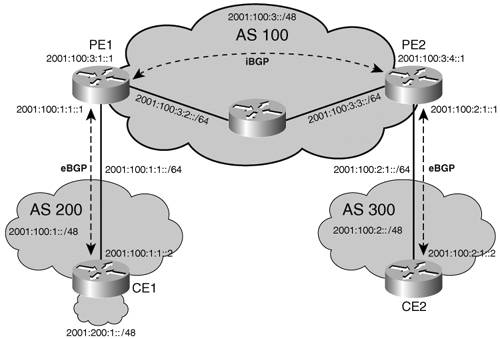

BGPBorder Gateway Protocol version 4 (BGP4) is the EGP used to exchange routes between autonomous systems in the Internet. BGP was designed based on experience gained with EGP, and provides built-in support for CIDR and route aggregation. BGP4 is specified in RFC 1771 and other BGP-related documents: RFC 1772, RFC 1773, and RFC 1774. For in-depth information about BGP, refer to the book Internet Routing Architecture: The definitive BGP resource, by Bassam Halabi. Almost no coordination of global policies takes place between autonomous systems (because of the difficulties of coordinating policies between independently administrated systems, and because ISPs are not inclined to reveal the setup of internal policies). In this context, a distance vector protocol could not by itself guarantee loop-free paths and fast convergence across autonomous systems. BGP is a path vector protocol, essentially a distance vector protocol that does not rely on the distance to destination to guarantee a loop-free path but on the analysis of the path itself. A direct consequence of this approach is that the path, a list of traversed autonomous systems, is accumulated and carried between BGP routers. The BGP basic unit of routing information is the BGP path, a route to a certain set of CIDR prefixes. Paths are tagged with various path attributes, of which the most important are AS_PATH and NEXT_HOP. The AS_PATH attribute contains a list of autonomous systems a route goes through to get to the destination. Loops are detected and avoided by checking that the router's own ASN is not in the AS_PATHs received from neighboring autonomous systems. The NEXT_HOP attribute is another important piece of the BGP route advertisement. When the BGP update crosses autonomous system boundaries (see the eBGP discussion below), the NEXT_HOP attribute is changed to be the IP address of the boundary router, while, as long as updates remain within an autonomous system, the next hop is left unchanged (see the iBGP discussion below). That ensures that within the autonomous system, the next hop is always the IP address of the external peer that announced the destination prefix, and that internal BGP peers do not have to be on the path to the advertised destination. BGP can be deployed in two forms: exterior BGP (eBGP) and interior BGP (iBGP). eBGP is used for interautonomous system peering, whereas iBGP carries BGP path information inside the same autonomous system. Although some of the information (route, metric) carried by iBGP might be redundant with that advertised by IGPs, such as IS-IS, OSPF, and so on, no IGP is capable of transporting BGP-specific path attributes such as the AS_PATH. Hence, iBGP is necessary to ensure that BGP path attributes received on one edge of the autonomous system, over the eBGP connection, are available on the other edge of the same autonomous system. Figure 4-1 illustrates where eBGP and iBGP apply and the next-hop/AS_PATH attribute setting. Figure 4-1. BGP Deployment ExampleTo understand how the next hop is updated or propagated, depending on BGP peering type, and how and where the AS_PATH is accumulated, you can look at BGP tables of routers in Figure 4-1. In this example, router CE1 advertises a route 2001:200:1::/48 over eBGP to PE1. At PE1, this prefix is received with AS_PATH={200}, and NEXTHOP 2001:100:1:1::2 (CE1). At PE2, the same prefix, received over iBGP, has the attributes AS_PATH and NEXTHOP unchanged, as illustrated in the following output of show bgp ipv6 command. Example 4-18. iBGP: Entry Received with Next Hop Unchanged
When sent from PE2 to CE2, the prefix is announced with AS_PATH={100,200}, and NEXTHOP 2001:100:2:1::1 (PE2), as illustrated in Example 4-19. Example 4-19. eBGP: Entry Received with Next Hop Changed
BGP runs over a TCP transport protocol. On connection start, BGP peers exchange complete copies of their routing tables. From there, the BGP peers maintain their respective routing database by exchanging only deltas, which makes the protocol fairly efficient as far as number of control messages is concerned. In addition to BGP attributes, CIDR is used by BGP to aggregate prefixes and reduce the size of the routing tables. When an ISP has been delegated a block of addresses, and has allocated part or this block to its own customers, BGP can aggregate routes received from these customers, and announce the entire block to its BGP peers, allowing a significant reduction in the number of BGP routing tables. Use of MP-BGP Extensions for IPv6 Interdomain RoutingMultiprotocol BGP4 (MP-BGP), specified in RFC 2858, defines extensions enabling BGP4 to carry routing information for multiple network layer protocols. Specific network layer protocol bits are specified in separate RFCs: for IPv6, it is RFC 2545. Only three pieces of information carried by BGP4 are IPv4 specific:
RFC 2858 assumes that any BGP speaker has an IPv4 address, which can be used in the aggregator attribute. Therefore, to enable BGP4 to support routing for multiple network layer protocols, the next hop and the NLRI were generically (as TLVs) inserted into a new MP_REACH_NLRI attribute. NLRI was also in a new MP_UNREACH_NLRI attribute. The former attribute is used to announce feasible routes, and the latter to withdraw unfeasible ones. Each of these attributes starts with an Address Family Identifier (AFI) and Subsequent Address Family Identifier (SAFI), to identify the network layer protocol. Both the next hop and the NLRI are variable-length fields, specified for each AFI/SAFI. For IPv6 unicast (AFI:2, SAFI:1), the next-hop field is composed of a next-hop length, and one or two IPv6 addresses, as detailed in the "BGP Next Hop" section. The NLRI is one or several 2-tuples of the form <length, IPv6-prefix>. Note that IPv6 prefixes can also be found in other SAFI, such as multicast (SAFI:2), label (SAFI:4), or VPN (SAFI:127). Although the formats of the next hop might vary from one SAFI to another (for instance, VPN will mandate a next hop in the form RD:IPv6-address, as detailed in Chapter 7, "VPN IPv6 Architecture and Services"), as well as the NLRI (for SAFI:4, it is a 3-tuple <length, label, prefix>), the two attributes introduced by MP-BGP still work in all these cases. MP-BGP extensions provide support for IPv6 through capability negotiation using the capability parameter of the OPEN message. During session establishment, the BGP peers negotiate capabilities as defined in RFC 2842. A BGP session could end up with many AFI/SAFI-negotiated capabilities, as shown in Example 4-20. Example 4-20. BGP Neighbor Status
BGP itself works exactly the same way whether it is BGP4 or MP-BGP for a particular AFI/SAFI such as IPv6 unicast. The interaction between BGP and the IGP running throughout the autonomous system, the scaling elements such as route reflectors, the distinction between interior and exterior peers, the route aggregation, the numerous BGP features, and so on are architectural elements that still apply to MP-BGP IPv6. BGP PeeringIn the most typical cases, BGP peering for announcing IPv6 routes will occur over an IPv6 transport, and eventually coexist with a separate BGP session for announcing IPv4 routes, as shown in Example 4-21. Example 4-21. Using Distinct BGP Sessions for Address Families IPv4 and IPv6
Note that although the BGP transport layer and address families advertised underneath deal with different network layer protocols, the ASNs are identical between IPv4 and IPv6. The deployment model implied by the preceding configuration example suggests that BGP operates independently for IPv4 and IPv6, with separate sessions over distinct transport layers. Although this is an optionattractive when IPv4 and IPv6 topologies are different because it provides the most flexibilityit is not mandated by BGP, and could bring additional configuration and operation complexity. As mentioned earlier, MP-BGP runs over TCP. The protocol version (IPv4 or IPv6) used to establish the TCP session is independent of the address family being advertised. In fact, as shown in the example in the previous section (show bgp all neighbors), the same TCP (and BGP) session (over TCP IPv4 in the example) can transport multiple address families (for instance, IPv4 unicast and IPv6 unicast). However, be aware of a couple of pitfalls while mixing transport and address families of different versions. The next hop advertised in the next-hop MP-BGP attribute is defaulted to the endpoint of the connection: You can easily understand that such a default cannot work when advertising an IPv4 AF over IPv6 or vice versa. The default must then be overwritten (for instance, by using a route-map command). Furthermore, BGP will try to synchronize the path (next hop) with the IGP: Even if the IPv6 update message has been distributed over TCP-v4, the BGP next hop must be routable, using the IGP running in the autonomous system. This is part of the verification performed by BGP, before electing a path as "best" and re-advertising to other peers. The "BGP Configuration Example" section shows two cases: IPv6 address family over IPv6 transport, and over IPv4 transport. With the limitations previously listed, the case of IPv4 address family announced over an IPv6 transport works, too. BGP Next HopAs already mentioned, the BGP next hop is either an IPv6 address of the eBGP peer sending the update, or in the iBGP case, the next hop is left unchanged while re-advertised. Note You can explicitly configure the iBGP peer to announce itself as the next hop (next-hop self). Another exception arises if the iBGP speaker did not receive a valid global next hop from its eBGP peer, which could happen when peering with it over link-locals. Finally, if the iBGP speaker is a 6PE (see Chapter 3, "Delivering IPv6 Unicast Services," for details), it must be on the labeled data path, to decode packets with labels that it owns: In that case, too, it will put itself as the next hop. When the BGP IPv6 peers share a common subnet, the MP_REACH_NLRI attribute contains a link-local address next hop, in addition to the global address next hop. The link-local next hop is then used locally, whereas the global next hop is eventually re-advertised by BGP. As a consequence, a BGP speaker that advertises a route to an internal peer may modify the network address of next-hop field by removing the link-local IPv6 address of the next hop. Using a link-local next hop to compute the routing interface for reaching a particular prefix proves especially useful with eBGP, when combined with peering over the link-local address. In case the peer changes its global address for whatever reason, neither the peer connection nor the next hop will be directly affected, and no forwarding hole should be seen. Of course, BGP entries will be updated (the renumbered global next hop should trigger new updates to be sent), but the connection should not be reset. Example 4-22 illustrates a BGP peering using a link-local address at node CE1, as in Figure 4-1. Example 4-22. Using Link-Local Address for BGP Peering
Note that the link-local address (highlighted) is followed by the interface to which it belongs. This is because link-local addresses are not guaranteed to be unique across interfaces of the router, as explained in Chapter 2, "An IPv6 Refresher." A next hop with a global address is set explicitly (using route-map) so that it can be propagated by PE1 to PE2 over iBGP. In the preceding example, the resulting entries in the routing table are as shown in Example 4-23. Example 4-23. Displaying BGP Table Entries and Next Hop
While only the global next hop (2001:100:1:1::1) is displayed in this summary, a closer look at one of these entries will show the following. Example 4-24. Details of One Specific BGP Entry's Next Hops
The link-local next hop, FE80::A8BB:CCFF:FE01:F600, is shown in parentheses, after the global next hop, 2001:100:1:1::1. Note Even though the eBGP speaker (CE1 in Figure 4-1) is peering over a link-local, and advertising a link-local next hop, it must also provide a global next hop to enable the eBGP (PE1) to propagate it to its iBGP peers. This global next hop must be explicitly set by a route map. In the absence of it, PE1 will announce one of its own global addresses and become the intermediate step router for all traffic to CE1. BGP Configuration ExampleThe following BGP configuration extract shows how to configure the IPv6 address family, for both eBGP and iBGP. Example 4-25. BGP Configuration Example
In this example, the IPv6 address family is configured and activated toward an iBGP peer (with an IPv6 TCP endpoint 2001:100:3:4::1) as well as toward an eBGP peer (IPv4 TCP endpoint 200.10.10.1). For the latter, the route-map statement sets explicitly the next hop, which is expected to be reachable from the peer, either using a default route, some IGP, or because peers are sharing a common subnet. |